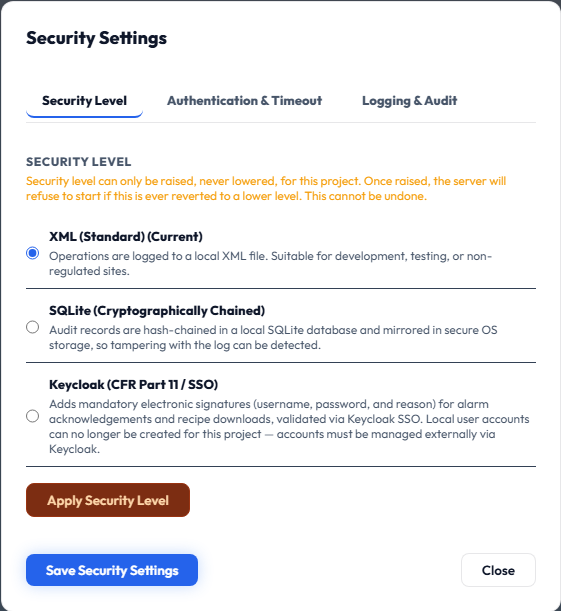
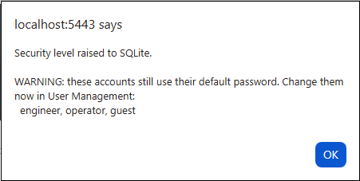

Goal
Understand the security ladder, move the server from XML mode to SQLite mode knowing exactly what changes and that it cannot be undone, and know where to find the Keycloak setup for regulated sites.
Draft The Keycloak pictures at the end are still to come.
The security ladder
The security ladder, from XML at the bottom to Keycloak at the top.
SentinelSCADA has three security modes, one above the other:
XML is where every new project starts. Accounts and the audit log are kept in plain XML files on the server. However, passwords are never stored as plain text. They are protected with strong one-way cryptography, so they cannot be read back from the file, and guessing them is deliberately slow. The files themselves are not encrypted, and the audit log is not protected against tampering. XML is suitable for development, testing and non-regulated sites, and it is what Parts 1 to 5 used.
SQLite (cryptographically chained) raises the bar from XML. Accounts and records live in an encrypted database instead of plain files, and every audit record is hash-chained to the one before it and mirrored in secure operating system storage, so that any tampering with the log can be detected. In practice that means:
Accountability you can show. You can demonstrate who changed what and when, and that the record has not been altered afterwards. That is useful for customers, auditors and insurers who ask for it.
A step toward regulated work without extra cost. Both XML and SQLite are in every edition, so moving up the ladder needs no new licence, and it keeps the way open to Keycloak later if you ever need it.
Suited to production sites. XML is for development, home automation projects and similar use. SQLite is the sensible choice once several people use the system and it matters that nobody can quietly change the record.
Keycloak (CFR Part 11 / SSO) is the top of the ladder, for regulated industries where each person’s identity must be verifiable. Sign-in moves out of SentinelSCADA’s remit to the Keycloak platform, an established open-source identity server. What the customer gets:
Sign-in that SentinelSCADA never sees. Passwords go to Keycloak, not to the SCADA server, and the server checks Keycloak’s signed tokens cryptographically.
Enterprise identity features. Multi-factor sign-in, password policies, account lockout and session management are provided by Keycloak, with a central user directory that can connect to Active Directory or LDAP, and single sign-on across your systems.
Electronic signatures. Alarm acknowledgements and recipe downloads require the person’s username, password and a reason, and each is recorded.
A tamper-evident audit trail with digital signatures, and a closed system: nothing is served to anyone who has not signed in, so there is no anonymous live view.
The technical controls for 21 CFR Part 11. Validating the installed system, and the procedures around it, remain the customer’s responsibility.
You can move up this ladder whenever you like, but you can never move back down. This part takes you from XML to SQLite and then says where to find Keycloak.
The step cannot be undone. Once a project has been raised, the server will refuse to start if it is ever reverted to a lower level. If you are using a virtual machine, take a snapshot first. Otherwise, take a backup of the project. SQLite mode is optional: XML mode is fine for a lab or a single-person system, and you can raise the level later.
Moving to SQLite
You need to be signed in as admin. Choose Security > Security Settings…. The Security Level tab is the first one. It shows the three modes, with the current one marked, and an orange reminder that the level can only be raised.

The Security Level tab on a new project.
Choose SQLite, then press Apply Security Level. A confirmation repeats that this is a one-way change. Choose OK to go ahead.
Apply Security Level makes the change by itself. The Save Security Settings button is for the settings on the other tabs, so you do not need it to keep the new level, and it does no harm if you press it.
Change the default passwords
When the level has been raised, the server checks your accounts and names any that still have their default password.

Accounts that still use a default password are listed.
Do what it says. Open Security > User Management… and change each of those passwords, as you did for admin in Part 3.
XML is now locked
Open the Security Level tab again. SQLite is now marked current, and XML is greyed out with the reason beside it.
XML can no longer be chosen.
Checking the result
The Launcher’s Server Status window now shows SQLite as the security mode, and the client list shows who is signed in.
Server Status, in SQLite mode.
Your users have been carried across, with their roles. Open Security > User Management… to see them.
The same accounts and roles as before the change.
Open Security > Audit Trail. It is now titled SQLite Cryptographically Chained Audit Trail. The change you have just made is its first record: who made it, when, and the old and new levels.
The first record in the new audit trail.
Keycloak, for regulated sites
Do not choose Keycloak unless you hold a Clipper or TradeWinds licence and your IT team has already set up Keycloak. The option appears in the Security Level dialog on every edition, but Keycloak support begins at Clipper. Choosing it without both of those leaves nobody able to sign in, because local accounts can no longer be created. Like the step to SQLite, it cannot be undone.
The list under The security ladder shows what Keycloak gives you. This is what it asks of you in return:
Keycloak has to be run. It must be deployed, configured and kept running, which normally takes an IT professional. If the Keycloak server cannot be reached, nobody can sign in.
Local accounts go away. Local user accounts can no longer be created for the project, because accounts are managed externally, in Keycloak.
It needs a Clipper or TradeWinds licence, and, like the step to SQLite, it cannot be undone.
Setting up Keycloak is a job for your own IT team, and this guide does not cover it. It involves Docker and Keycloak configuration. The Server Guide describes the security modes and the setup in detail. Open it from the tray menu with Help (Server Guide)….
Checkpoint
You now have a server in SQLite mode, with your accounts and roles intact, the default passwords changed and a tamper-evident audit trail.
If you are using a virtual machine, shut down the guest and take a snapshot called SQLite mode working.